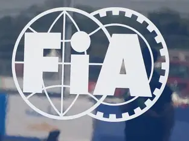

Latest FIA & Driver News

EXCLUSIVE
FIA confirms updated race governance framework
The FIA has outlined improvements to race control operations following extensive reviews with teams and drivers.

DRIVERS
FIA clarifies driver conduct guidelines

RULES
Stewarding consistency remains top priority

SAFETY
New safety standards approved for 2026